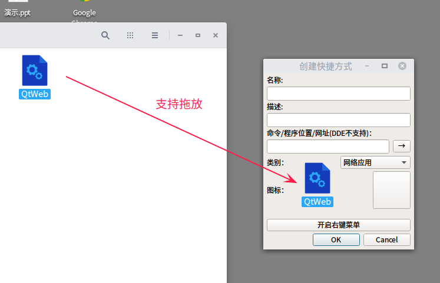
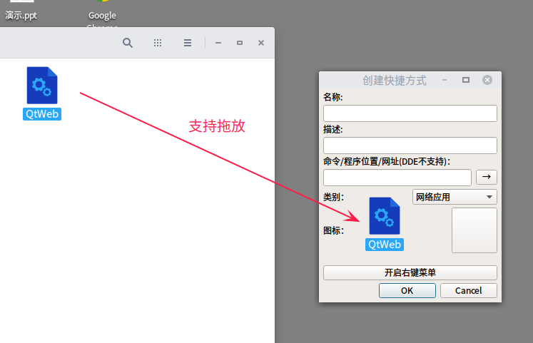

创建快捷方式 v0.2 17.12.17_11:11:50用来为【可执行文件】生成快捷方式。 支持拖放。 可输入： 1.命令； 2.程序绝对路径； 3.网址（深度桌面不支持）。 能在nautilus文件管理器里加入右键菜单，仅支持nautilus文件管理器（现在深度自带那个）！

项目地址：https://github.com/noahsai/mkdesktop
|

创建快捷方式 v0.2 17.12.17_11:11:50用来为【可执行文件】生成快捷方式。 支持拖放。 可输入： 1.命令； 2.程序绝对路径； 3.网址（深度桌面不支持）。 能在nautilus文件管理器里加入右键菜单，仅支持nautilus文件管理器（现在深度自带那个）！

项目地址：https://github.com/noahsai/mkdesktop
|
Thanks to github